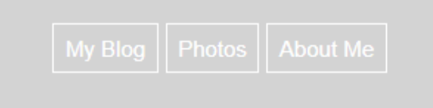

HTML + CSS - Lesson 4
Linking Pages and Buttons
In this lesson we continue working on the “Home” webpage by using CSS and HTML and laying out the ability to link separate web pages with more buttons. We will also learn how to animate buttons.
First, we will be adding more buttons and learning to animate them.
In regards to adding buttons, we learned this in a previous lesson. Under the first <button> </button> tag, you can simply add two more <button> </button> tags.
I called the other two buttons “Photos” and “About Me”
<button>My Blog
<button>Photos
<button>About Me
When using CSS to style the buttons, as they are all called “button” the CSS button code will edit all the buttons.
However, unique from the previous lesson, I added a border:
border: 1px solid white;
Other than that, I simply used the CSS to match my website and so can you!
Here’s my code for the buttons.
button {
padding:10px;
font-size: 120px;
font-fammily: 'Montserrat','sans-serif';
background-color: transparent;
color: white;
border: 1px solid white;
text-align: center;
}
Now, we will use CSS to animate the buttons. Create a new CSS element:
button:hover {
This defines what happens when the button is hovered over. Therefore, you can change the colors exactly like a regular button to whatever you see fit.
Here’s my code:
button:hover {
background-color: white;
color: rgb(19,60,121);
border: 1px solid white;
}
Here is how the button looks without and with the animation effect:
>